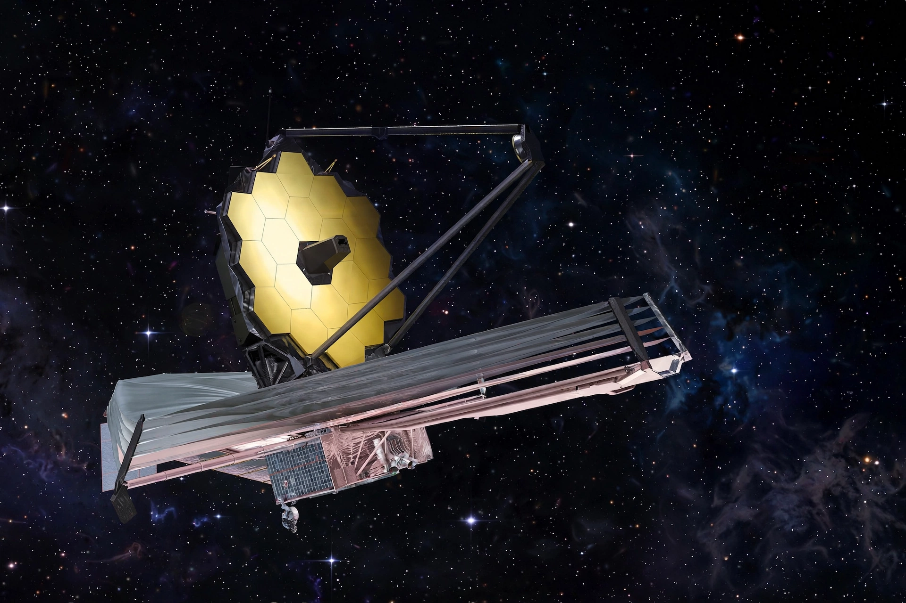

From Wikipedia, the free encyclopedia
| James Webb Space Telescope | |
|---|---|
| Operator | NASA / ESA / CSA |
| Launch | 25 December 2021, Ariane 5 |
| Position | Sun–Earth L2, about 1.5 million km away |
| Mirror | 6.5 m gold-coated beryllium, segmented |

The James Webb Space Telescope (JWST) is a space telescope designed mainly to observe infrared light, launched on 25 December 2021 and stationed in a halo orbit around the Sun–Earth L2 point. It is the largest and most powerful space telescope built, developed by NASA with the European and Canadian space agencies.
Webb's tennis-court-sized sunshield keeps its instruments colder than −233 °C, letting it see the first galaxies that formed after the Big Bang, peer into dust clouds where stars and planets are born, and analyse exoplanet atmospheres. It complements the older Hubble Space Telescope, which works mainly in visible and ultraviolet light; its first full-colour images were released in July 2022.